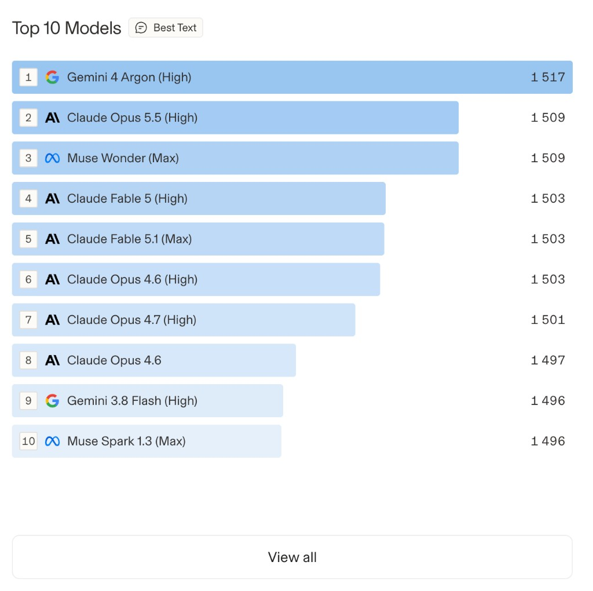

01 · голос
Пара без имён
Один запрос, два ответа. Выбор одного из них и есть единица таблицы. Голос после того, как имена уже видны, в рейтинг не идёт.
На этой странице модели выстроены по человеческим предпочтениям. Человек видит два ответа без имён и выбирает тот, который ближе. Щелчок по снимку открывает живую таблицу.
Один запрос, два ответа. Выбор одного из них и есть единица таблицы. Голос после того, как имена уже видны, в рейтинг не идёт.
Голоса складывают моделью парных сравнений, родственницей рейтинга Эло. У балла есть доверительный интервал. Разброс мест показывает лучшее и худшее место, ещё совместимое с этими интервалами.
Место, балл с интервалом, число голосов и цена за миллион токенов. Таблиц несколько: текст, изображение и другие арены. Стиль ответа учитывают отдельным признаком.

Снимок — первая десятка на день, когда его сняли. Место в таблице — предпочтение людей на день просмотра. На устройство блока его не переносят.